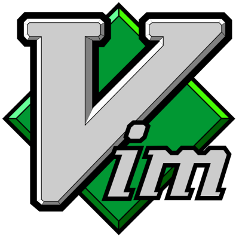

Editors:
It lets you read, write your code and save it in your device on a particular folder with a desired file extension so you can further compile or interpret that file. Each device(Like Laptop/Personal Computer(PC)) has a default editor like Notepad in Windows, gedit in Ubuntu or TextEdit in Mac.
Why do we need editors?
As a programmer, you will definitely need a advance editor for your project in near future. While starting to code you must be able to write, save and run the program with default editors. But as you start a new project you must be able to switch to advance editors because they provide you many features which are not possible in default editors. You should not start the very basic program with advance editor because they provide you with basic syntax or popularly called skeleton of program which makes you habitual of using it and sometimes in an interview or when anyone says to write simple program on white board syntax error usually occurs. This can be problem. But when you are able to write small basic programs like sorting or program with functions which can be compiled/interpret without any error you can switch to different editors.
Always indent your code because it make the code readable and easy to understand for anyone. This is one major reason why Python is famous because you need to indent the code, otherwise it won't run. Indentation makes debugging easier.
Benefits of using advance editors:
- When you will write huge programs which is of hundred or thousands of lines it helps you with defining line on which error occurs as many interpret says "error at line number 870"(example)
- It helps you detect or suggest keywords or next statement that should be written in your code. It really saves time.
- It helps you to have access over Plugins which ease the work.
- It gives many options like seeing Document Map. You can open an entire folder. You can do changes in multiple part at once and many more000.
- It helps you change the color of editor i.e., enables to change color of your workspace.
Suggestion: Always use Black background and white color text in your editor because as you start coding you need to work for many hours in a go. So to reduce strain on your eyes you must do the change, it really helps a lot.
Each and every editor has its own features and advantages. They provide a wide variety of options.
Below are some of them which are said to be best editors:
 Notepad++ is the editor I use for my coding purpose. This whole website is written on this editor. It is the extension of default Notepad editor of Windows. Notepad++ is written in C++ and uses pure Win32 API and STL which ensures a higher execution speed and smaller program size. It is small just 5MB software. The biggest advantage of Notepad++ over any other text editor listed here is the fact that it can manage huge files without any major lags or crashes. Notepad++ supports tabbed editing, drag and drop text movement, a multi-item clipboard, split screen editing with synchronized scrolling, find and replace across multiple documents, and file comparison. If you're using Notepad++ for editing code, it supports syntax highlighting for over 48 programming languages, auto-completion.
Notepad++ is the editor I use for my coding purpose. This whole website is written on this editor. It is the extension of default Notepad editor of Windows. Notepad++ is written in C++ and uses pure Win32 API and STL which ensures a higher execution speed and smaller program size. It is small just 5MB software. The biggest advantage of Notepad++ over any other text editor listed here is the fact that it can manage huge files without any major lags or crashes. Notepad++ supports tabbed editing, drag and drop text movement, a multi-item clipboard, split screen editing with synchronized scrolling, find and replace across multiple documents, and file comparison. If you're using Notepad++ for editing code, it supports syntax highlighting for over 48 programming languages, auto-completion.
 Atom is a free and open-source text and source code editor available for many operating systems and have embedded Git Control, developed by GitHub. Originally called Atom Shell is based on Electron framework of javascript that enables cross-platform desktop applications using Chromium and Node.js . The disadvantage of using Atom is cannot handle large files and tends to crash and also consumes a lot of memory.
Atom is a free and open-source text and source code editor available for many operating systems and have embedded Git Control, developed by GitHub. Originally called Atom Shell is based on Electron framework of javascript that enables cross-platform desktop applications using Chromium and Node.js . The disadvantage of using Atom is cannot handle large files and tends to crash and also consumes a lot of memory.
Sublime Text uses a custom UI toolkit, optimized for speed and beauty, while taking advantage of native functionality on each platform. Sublime Text is built from custom components, providing for unmatched responsiveness. From a powerful, custom cross-platform UI toolkit, to an unmatched syntax highlighting engine. It is a proprietary software with a focus on features.

Vim is extremely popular among developers and other computer enthusiasts who seek an entirely customizable text editor.
It supports complete keyboard operations without any need for the mouse as it is one of the oldest text editors in the history of computers. hence it is popular.
 Emacs is the extensible, customizable, self-documenting, real-time display editor. Emacs has over 10,000 built-in commands and its user interface allows the user to combine these commands into macros to automate work.
Source:LiveEdu
Emacs is the extensible, customizable, self-documenting, real-time display editor. Emacs has over 10,000 built-in commands and its user interface allows the user to combine these commands into macros to automate work.
Source:LiveEdu